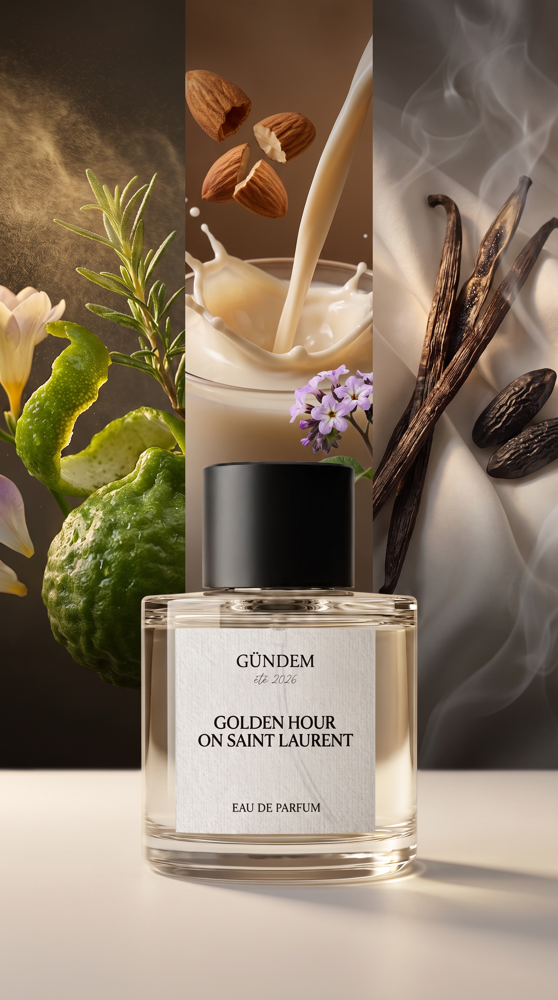
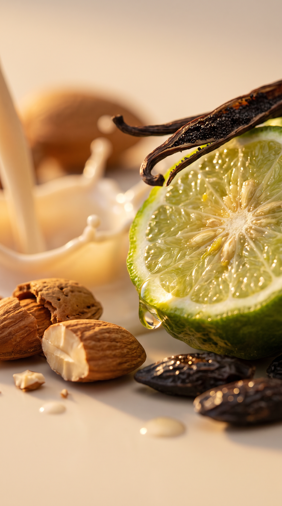
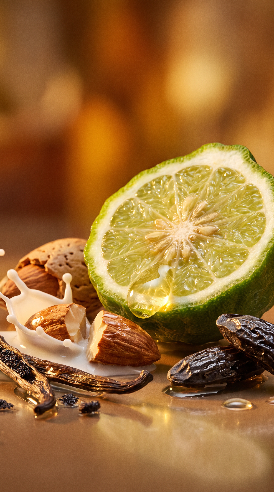
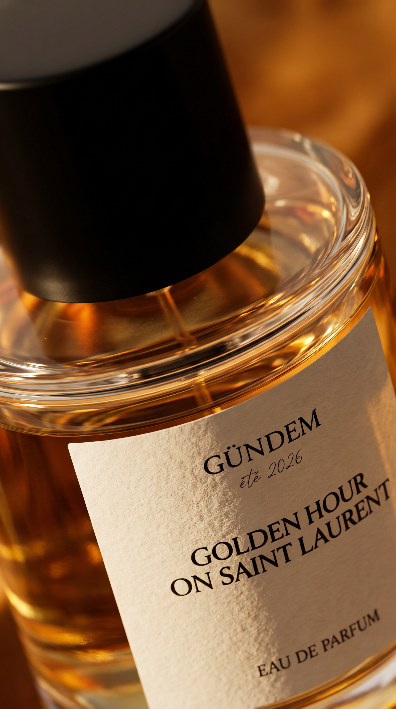
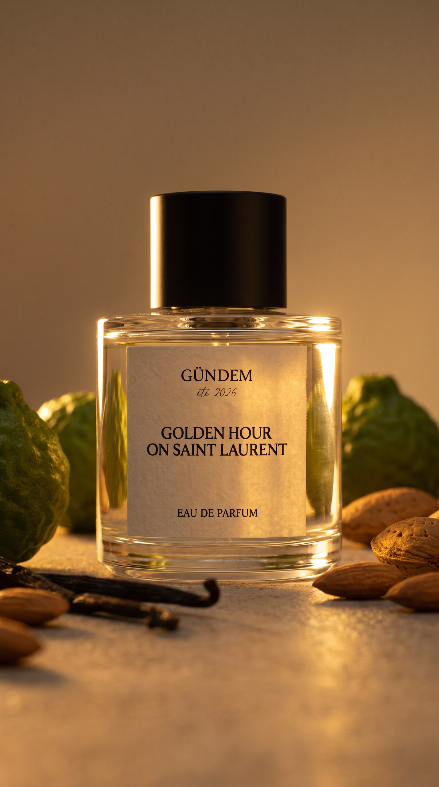

Project 05 — Gündem, fragrance brand identity
A fragrance brand built with no product, no studio, and no production budget — an AI-native identity for a summer eau de parfum, made to feel real: a believable bottle and label, a coherent scent story, and a golden-hour world around it.
Result: a complete brand world from idea to launch-ready visuals — hero imagery, ingredient macros, and editorial compositions, all coherent enough to sell a bottle that does not exist yet.
Tools: Nano Banana Pro · Adobe Firefly · Seedance 2.5 · Photoshop · Premiere Pro




